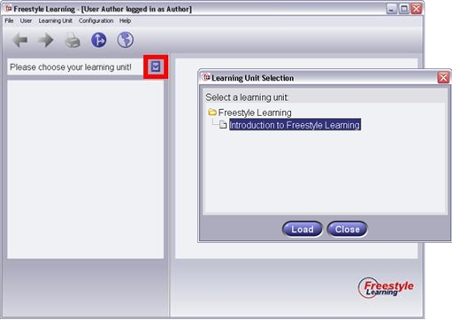

The choice of a Learning Unit is made by a mouse click on the button below the main menu.

The upcoming dialog includes an overview of the installed Learning Units. The overview can be edited in author mode by activating the pop menu with the right mouse button. After the choice all Learning Unit Views will be loaded.
Hint: If no Learning Units are listed in the dialog, no units are installed. In this case you have to import a Learning Unit.
Back to Main Help Page